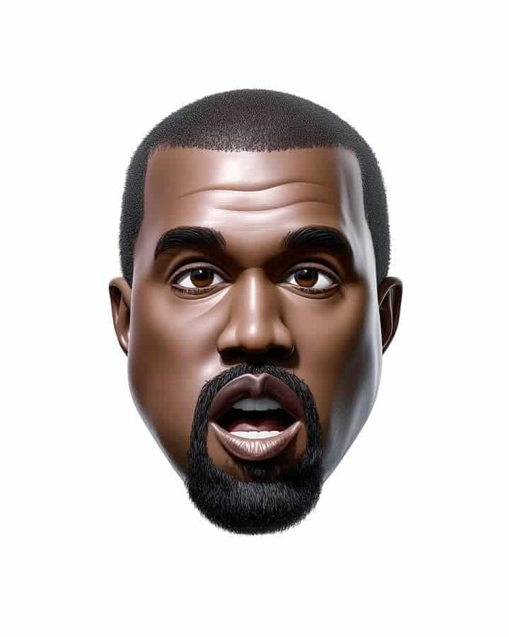

How to use this prompt
Copy the full prompt and replace (NAME) with the person, character, or object you want to reimagine. Paste it into your AI image generator (such as MidJourney, DALL·E, or Stable Diffusion) and run it with default or high-resolution settings. For best results, keep the background plain white, avoid adding extra style modifiers, and use consistent wording if you’re generating multiple variations.
Prompt
(NAME) reimagined as a glossy 3D emoji character in the official Apple iPhone emoji style, simplified cartoon proportions, smooth shiny textures, expressive but minimal facial details, clean plain white background, high-resolution studio render
Why this prompt works
This prompt is carefully structured to match the visual language of Apple’s official iPhone emojis, which are instantly recognizable worldwide. By specifying glossy 3D textures, simplified cartoon proportions, and minimal but expressive facial details, it guides the AI to stay close to the emoji style without overcomplicating the render. The plain white background ensures clean, distraction-free images that look professional and studio-ready. This balance of clarity and detail makes it ideal for generating high-quality, consistent emoji-style characters that stand out across social media, branding, and creative projects.
Example Output
Here's an example result generated with this exact prompt:
Prompt Variations
- Change (NAME) to an animal, object, or symbol → get a fun emoji-style version of anything beyond just people (e.g., “cat reimagined as a glossy 3D emoji”).
- Change the background from plain white to gradient or pastel → get a more vibrant, poster-like look while still keeping the emoji style clean.
- Change proportions from “simplified cartoon” to “chibi-style” → get an even cuter, more exaggerated version of the emoji character.
- Change “smooth shiny textures” to “matte clay textures” → get a softer, handcrafted look while preserving the emoji character’s proportions.
FAQ
Can I use this prompt to create emojis of real people?
Yes — simply replace (NAME) with the person’s name or description (e.g., “Elon Musk” or “a young girl with glasses”). The AI will generate a glossy 3D emoji-style version while keeping the proportions simple and cartoon-like
Which AI tools work best with this prompt?
This prompt works well with MidJourney, Stable Diffusion, and DALL·E. For the most accurate Apple-style render, use a model that handles glossy 3D textures and cartoon proportions effectively. MidJourney usually gives the closest match to the polished emoji look.